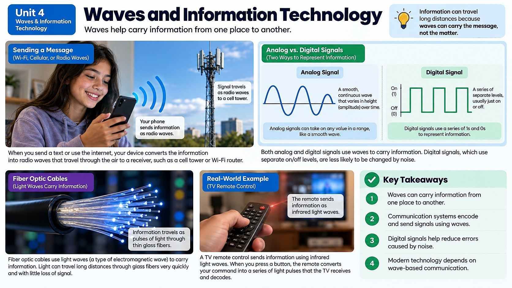

A vinyl record and a streamed song can play the exact same music, so why does the digital version survive scratches, copies, and distance so much better than the analog one?

Two Ways to Encode a Message
Every time you send information through a wave, that information has to be encoded: turned into a pattern the wave can carry. There are two fundamentally different ways to do this: analog and digital. An analog signal encodes information as a smooth, continuously changing wave, exactly mirroring the original sound or image. A vinyl record works this way: tiny, continuously varying grooves are physically carved into the record to match the exact shape of the original sound wave, and a needle traces those grooves to recreate the music.
A digital signal instead breaks information down into discrete numbers, specifically a stream of 1s and 0s called bits. A digital music file doesn't store a continuous wave shape; it stores thousands of numerical snapshots of the wave taken every second, then rebuilds an extremely close approximation of the original sound when you hit play. It looks less "natural," but that difference turns out to be a superpower.
The quality of a digital recording depends heavily on how often those snapshots, called samples, are taken. Standard music CDs sample sound 44,100 times every single second: a rate chosen because it's just high enough to accurately capture every frequency the human ear can hear. Sample too infrequently, and the digital copy misses fast changes in the original wave, producing a choppy or distorted sound; that's part of why old, low-quality digital recordings from decades ago sometimes sound thin or robotic compared to a modern high-resolution digital file. It's a direct trade-off: more samples per second means a more faithful copy of the original wave, but also a larger file to store or transmit.
Why Digital Wins for Long-Distance Communication
Here's the problem with analog signals: every time they travel, get copied, or pass through interference (static, noise, scratches), tiny errors creep in and are impossible to separate from the real signal. That's because the whole signal is one smooth, continuous wave, so there's no way to tell an error from real data. That's why an old vinyl record picks up crackles and pops over time, and why a weak analog radio station gets fuzzy and staticky the farther you drive from the transmitter.
Digital signals solve this beautifully. Because the information is just a sequence of numbers (1s and 0s), a receiving device only has to decide between two options at each point: is this a 1 or a 0? Even if some noise sneaks in during transmission, it's usually easy to tell what the original bit was supposed to be, and many digital systems can detect and even correct errors automatically. That's why a streamed song sounds identical whether it just left the server or traveled halfway around the world, and why a digital photo can be copied a thousand times with zero loss in quality (something an analog photocopy could never do).
From Vibration to Light and Back Again
Modern communication technology is a nonstop relay race between mechanical and electromagnetic waves. When you talk into your phone, your voice creates a mechanical sound wave in the air. Your phone's microphone converts that mechanical wave into an electrical signal, digitizes it into 1s and 0s, and then converts it again into an electromagnetic wave (a radio wave) that can travel enormous distances at the speed of light without needing any medium at all.
Fiber optic cables take this even further, converting digital signals into pulses of light that race down hair-thin strands of glass, bouncing off the inner walls through total internal reflection for hundreds or even thousands of miles with almost no signal loss. Wifi routers do something similar, broadcasting your digitized data as radio waves through the air to every device in your house. At the other end, your friend's phone or laptop receives that electromagnetic wave, converts the digital data back into an electrical signal, and finally turns it back into a mechanical sound wave that vibrates a speaker, recreating your voice, your music, or your video call, often thousands of miles from where it started, all within a fraction of a second.
Real Technology, Real Impact
This analog-to-digital revolution touches nearly every piece of technology you use. CDs and streaming services replaced analog cassette tapes because digital audio doesn't degrade with each play or copy. Cell phones convert your voice into digital radio signals that can be compressed, encrypted, and transmitted efficiently across cell towers spanning entire countries. Wifi networks pack enormous amounts of digital information (video, photos, messages) into radio waves broadcast through your home. And fiber optic internet, which carries digital information as pulses of light, now forms the backbone of the global internet, moving unbelievable amounts of data between continents through cables laid across the ocean floor.
From talking drums to fiber optic cables, the core idea has never changed: waves carry both energy and information, and civilizations advance by getting better at encoding, transmitting, and decoding that information across greater distances, more reliably, and with less lost along the way.
How Much Can a Wave Carry? Bandwidth and Compression
Not every wave can carry the same amount of information at the same time, and that limit is called bandwidth: essentially, how much data a signal can transmit in a given amount of time, usually measured in bits per second. A narrow band of radio frequencies can only carry so many phone calls or so much video before it gets overloaded, which is exactly why old dial-up internet connections, squeezed through the narrow bandwidth of a telephone line, took minutes to load a single image that loads instantly today over a fiber optic or 5G connection carrying billions of bits every second.
Higher-frequency waves generally have more room to carry information, which is part of why engineers keep pushing communication technology toward higher frequencies, from AM radio, to FM radio, to wifi, to the newest 5G cell networks, with each jump unlocking dramatically more bandwidth. Fiber optic cables use light, an extremely high-frequency wave, which is a huge part of why they can carry such enormous amounts of internet data across entire oceans.
Engineers also rely on compression to squeeze more information into limited bandwidth. A streaming video service doesn't send every single detail of every frame; instead, clever algorithms remove information your eyes are unlikely to notice missing, like parts of an image that barely change from one frame to the next, shrinking the file dramatically without a noticeable drop in quality. That combination (higher-frequency waves carrying more bandwidth, plus compression squeezing data down further) is exactly why a two-hour movie can stream smoothly over a home internet connection instead of requiring an impossibly huge, uncompressed file.
Real-World Connections
Streaming Video Through Fiber Optic Cables
When you stream a video, the information travels as pulses of light through hair-thin glass fiber optic cables, sometimes for thousands of miles, as a digital signal that stays clear the entire way.
Vinyl Records vs. Streaming Music
A vinyl record stores sound as a continuously changing analog groove that can wear down and get scratchy over time, while a digital music file stores the same song as precise numbers that sound identical no matter how many times it's copied.
Meet the Scientist
Telecommunications Engineers
Telecommunications engineers design the fiber-optic and wireless networks that carry digital information around the world. They constantly work to squeeze more data through cables and radio waves while keeping the signal as error-free as possible for billions of users.
Key Vocabulary
Bold, underlined words in the reading above are clickable too. Tap one to see its definition pop out. Or click or tap a card below to reveal the definition.
Explore More
Chapter Review
1. What is the key difference between an analog signal and a digital signal?
2. Why does a streamed digital song usually sound just as clear after traveling across the world as it did at the source?
3. What allows light to travel for miles down a fiber optic cable without escaping the glass?
4. When you speak into a cell phone, what is the correct order of wave conversions that happens?
5. Why do old vinyl records develop crackles and pops that a digital music file does not?
California Science Test (CAST) Practice
A telecommunications company tested how clearly an analog radio signal and a digital radio signal could be received at increasing distances from the same transmitter. The results, measured as a percentage signal clarity, are shown in the table below.
| Distance from Transmitter (km) | Analog Signal Clarity (%) | Digital Signal Clarity (%) |
|---|---|---|
| 5 | 95 | 99 |
| 20 | 70 | 98 |
| 50 | 40 | 95 |
| 100 | 10 | 90 |
Based on the data in the table, which claim about analog and digital signals is best supported by the evidence?